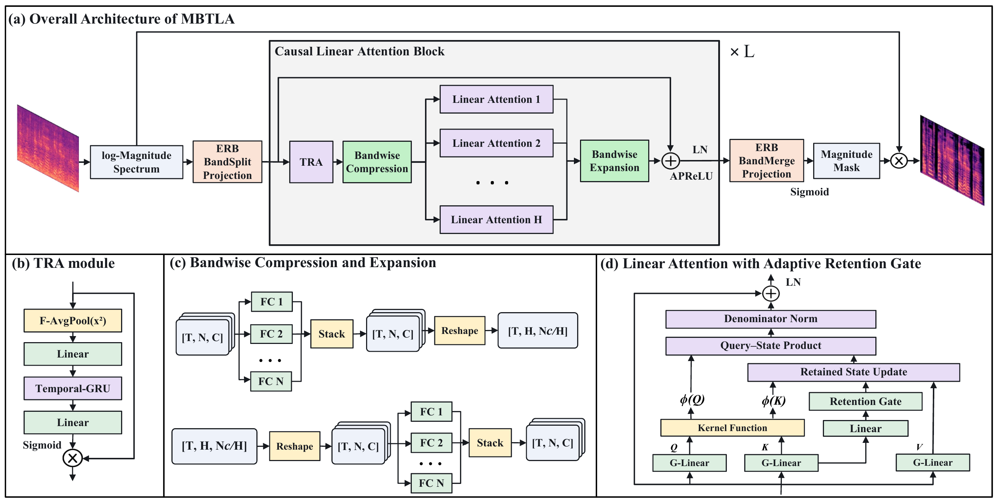

Split. Compress. Branch.
ERB-spaced bands preserve spectral structure. Bandwise compression reduces the attention dimension; four branches jointly cover the spectrum.
Multi-Branch Temporal Linear Attention
with Adaptive Retention Gate
for Lightweight Speech Enhancement
1 Key Laboratory of Modern Acoustics, Nanjing University
2 NJU-Horizon Intelligent Audio Lab, Horizon Robotics
THE MODEL
Efficient temporal modeling.
Content-dependent memory.
A compact, causal attention backbone for speech enhancement on resource-constrained devices.
MBTLA maintains a fixed-resolution, ERB-band representation across stacked Causal Linear Attention (CLA) blocks. Independent bandwise projections compress the features, which are partitioned into non-overlapping frequency branches for efficient temporal modeling. An adaptive retention gate controls how much history each branch keeps, while denominator normalization keeps the retrieved content and its normalization aligned with the same retained history.
ERB-spaced bands preserve spectral structure. Bandwise compression reduces the attention dimension; four branches jointly cover the spectrum.
A content-dependent scalar gate decays both the content and normalization states, adapting memory across frames, branches, and block depths.
Fixed-size recurrent states summarize the past, giving linear time complexity in sequence length and constant state memory.

Manuscript results on the simulated DNS3 test set. End-to-end RTF was measured on a single Intel Core i7-13700KF CPU. The larger configuration uses 100.1M MAC/s and 1.071M parameters, with a PESQ of 2.40.
LISTEN & COMPARE
Compare MBTLA with the noisy input, clean reference, and five baseline systems. Select a sample, then listen across methods. Headphones are recommended.
AUDIO COMPARISON
16 kHz · Mono · 8 seconds
Play any signal to start. Only one signal plays at a time.
Computed from the audio files above using a shared color scale. Frequency: 0–8 kHz; display range: −80 to 0 dB relative to the largest STFT magnitude across the eight signals.

Select the figure to open it at full size.
All demo files are 8-second, 16 kHz mono excerpts. Individual examples illustrate audible differences; aggregate results are reported in the manuscript.
INSIDE THE MEMORY
Across blocks
and frequency branches
Explore how MBTLA retains history, gates channels, and aggregates temporal features. The original manuscript figures are followed by a closer look at all four branches over 1,000 test utterances.

Blocks 1–2 focus on local context, Blocks 3–4 retain multi-second history, and Blocks 5–7 use shorter or intermediate horizons. Smaller retention rates refresh memory faster; rates near one preserve longer context.

A CLOSER LOOK

Averaging the branches can hide distinct memory patterns within a block. In Block 3, Branches 2 and 3 look back about 4.60 and 4.71 seconds, compared with 0.95 and 0.47 seconds for Branches 1 and 4. The longer-memory branches change across depth: Branch 4 stands out in Block 5, while Branch 2 does so in Block 7.
Utterance-level paired tests support an overall branch difference in every block. The separation varies: all four branches in Block 2 remain local, and some branch pairs have similar memory spans.
CHANNELS & TEMPORAL FEATURES

(a) Channel gating. TRA scales channels selectively. Its overall mean is about 0.65 in the first two blocks and 0.45 in Block 7. (b) Context magnitude. Attention output RMS generally increases with depth, although Block 5 shows a decrease. Memory span and output magnitude differ: Block 6, Branch 2 has a short lookback of 0.087 seconds but the largest RMS in that block, 0.711.
Samples are aligned by mixture onset, so averaging smooths utterance-specific changes. RMS describes learned feature magnitude rather than a branch’s importance to enhancement quality.